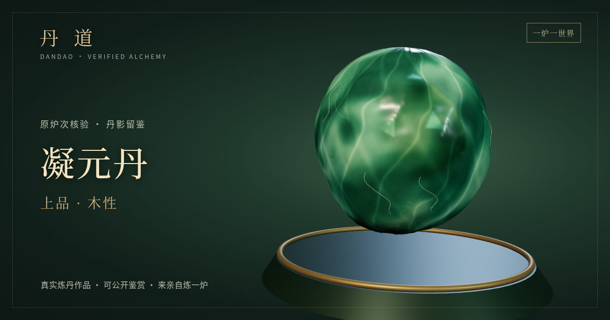
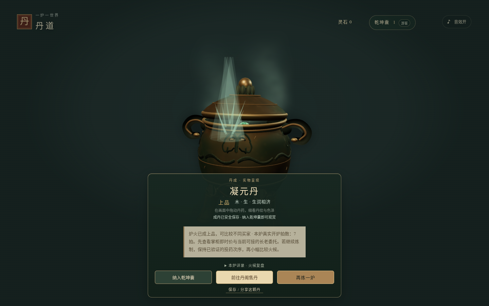
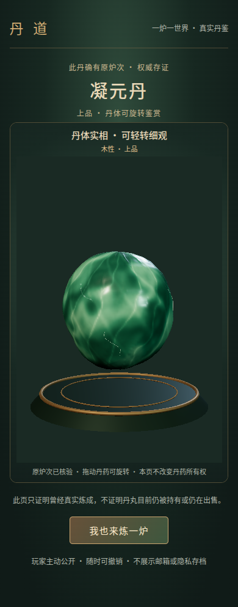
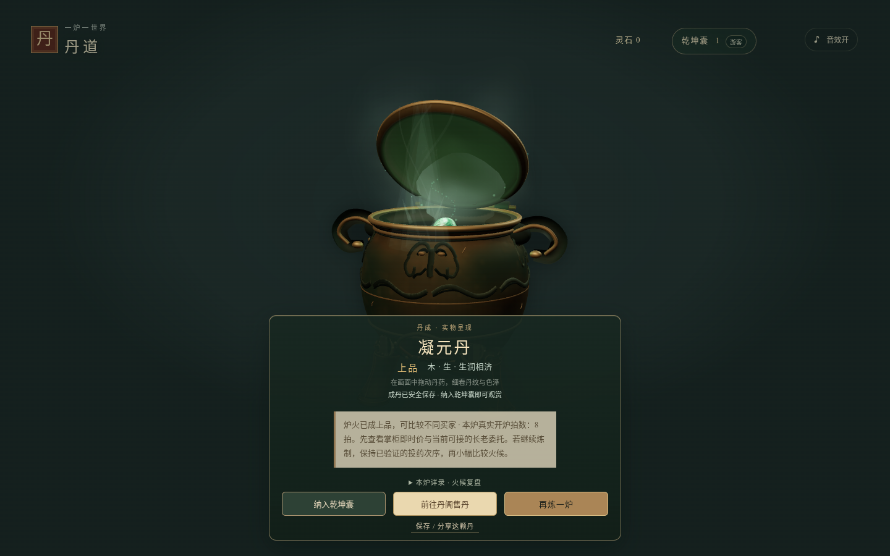
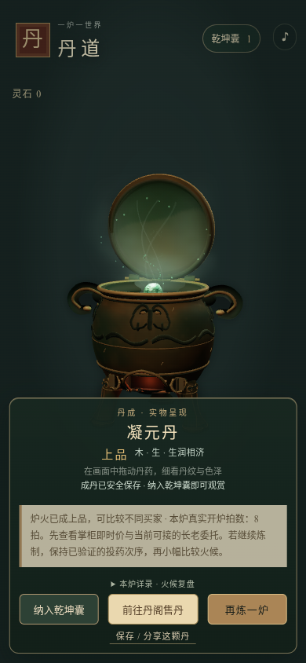
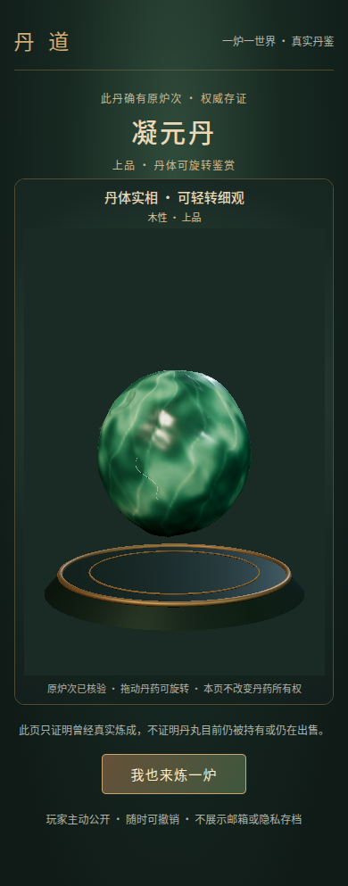
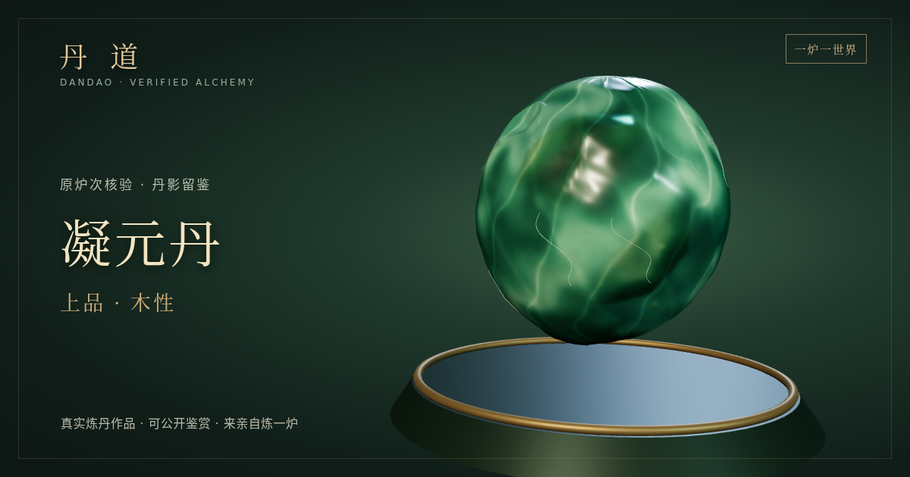

W144 · REAL FURNACE · POSTGRESQL · THREE.JS
炼出的这一枚，
才值得留下影。
从空空的乾坤囊开始，真正投药生火，等待七炉刻，炼成上品凝元丹。只有玩家亲自二次确认，它才会成为一份可公开鉴赏的作品。下方所有画面均取自这一炉的实际测试，绝非另画的“相似丹药”。
这是明确标记的隔离 QA 测试账号作品，不是生产玩家。它证明完整分享功能已经在正式主线代码上跑通；尚不代表 dandao.playmoru.com 已上线新版本。
01 · 真实原丹的专属社交预览

02 · 同一炉次的前后证据


04 · W144 正式服真实验收（2026-11-22）
正式版发布后，使用一个明确标记用途的 QA 新访客在公网实际炼成上品凝元丹（8 炉刻），在游戏内二次确认公开，再由不带登录 Cookie 的浏览器查看真实三维丹鉴。图片来自正式网站 Chrome 实际截图，不是此前隔离 PG 的画面。该公开测试链接已撤销，不在此保留任何可用短码。



发布当轮验证：PostgreSQL 005/006 迁移、W77 双槽切换、正式 API/静态指纹、丹鉴 SSR、匿名 WebGL 鉴赏均通过。生产专属封面暂无 Chrome worker，自动回退通用品牌图；不宣称已经支持微信/YouTube/Meta/X 的无需授权自动发布。
05 · W145 正式服务器原创三维社交封面（已启用）
这张是实际生产服务器在独立 systemd 服务内，使用官方 Chrome 的真实 Namespace + Seccomp 沙箱，从已核验的自然炼制 QA 原丹生成的原创 1200×630 PNG。首轮封面有中文方框；补装 Noto CJK 后重新生成，并已对照画面检查正常。图片只是验证渲染能力的 QA 原丹，不是尚在公开的真实玩家作品。

03 · 真正核验过的完整操作
首次点击公开不会发布。第二次确认后，服务器才签发作品短码、允许陌生访客浏览；后台从真实外观种子生成专属三维预览。作者进入管理页再二次确认撤销后，网页、公开 API 与封面均返回 404，数据库中的灵石、丹药与原始炼炉记录完整不变。
说明：W143 电影短片与本页 W144 自然七刻原丹来自**不同的 QA 炉次**，没有把两枚丹混称为同一件作品。